L’application Auto-contrôle permet de contrôler que des envois d’une norme d'échange et vérifier qu’ils sont conformes relativement à la version installée sur l’application. Pour illustrer les fonctionnalités d’Auto-contrôle, nous prendrons des exemples de la norme DSN qui utilise toutes les fonctionnalités de cette application.
Les exemples de l’Auto-contrôle illustrés dans ce document ont été créés à partir de l’Auto-contrôle une norme d'échange DSN (l’outil s’appelle alors DSN-VAL).
Pour pouvoir lancer l’application en mode graphique il est nécessaire que la machine virtuelle Java utilisée par le système par défaut corresponde à l’architecture du package d’Autocontrole utilisé. Dans le cas contraire, un message d’erreur s’affichera au lancement indiquant qu’il manque une librairie.
Si vous avez installé plusieurs machines virtuelles Java avec différentes architectures, vous pouvez sélectionner celle à utiliser par défaut de la manière suivante :
Pour Windows :
Pour Linux :
L’application Auto-contrôle possède une fenêtre principale contenant l’ensemble des outils permettant d’accéder aux fonctionnalités de l’application ainsi qu'à un ensemble de vues.
Voici la fenêtre principale :
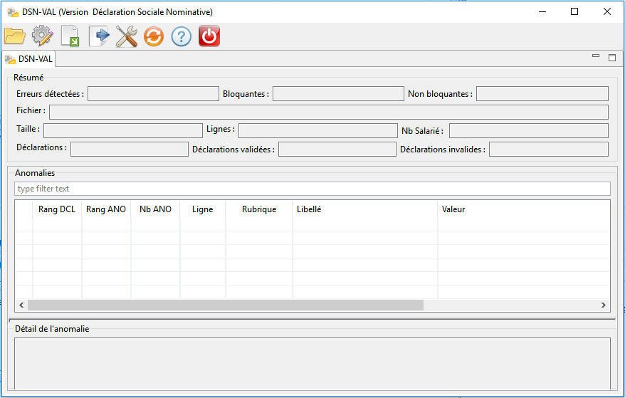
A partir de celle-ci, différentes vues sont accessibles :
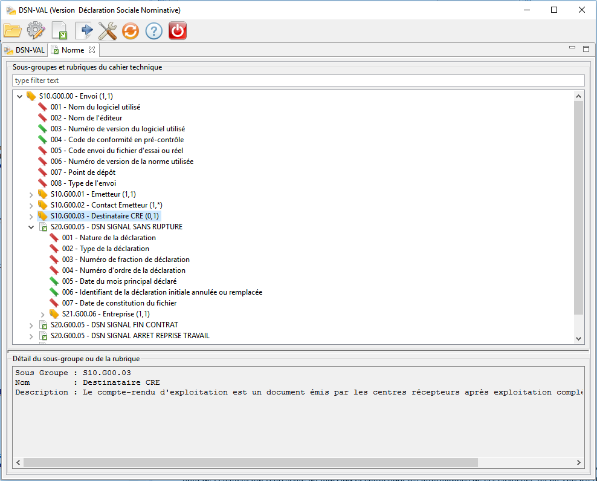
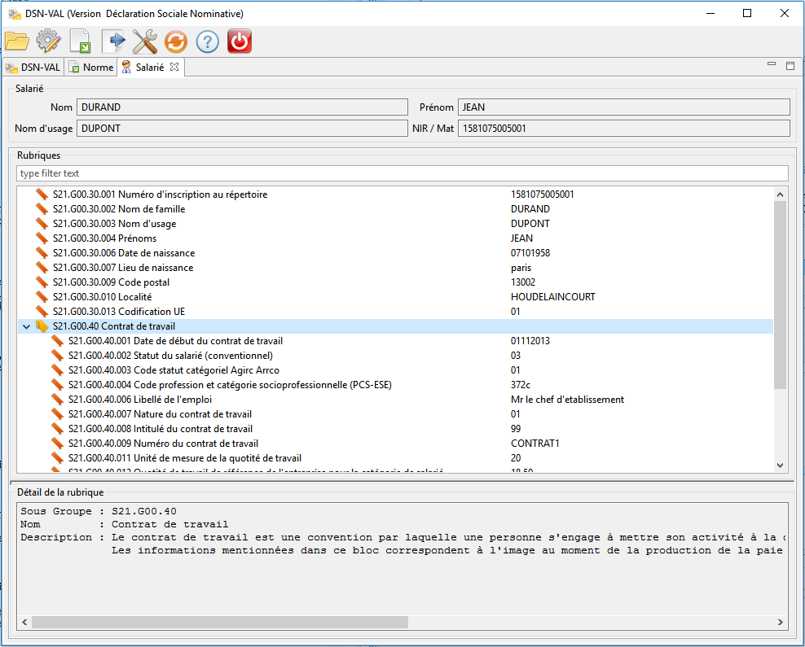
Les vues peuvent être disposées selon l’humeur de l’utilisateur. Une des dispositions possibles consiste à les mettre côte à côte à l’intérieur de la fenêtre principale. Par exemple, une à gauche et une à droite :
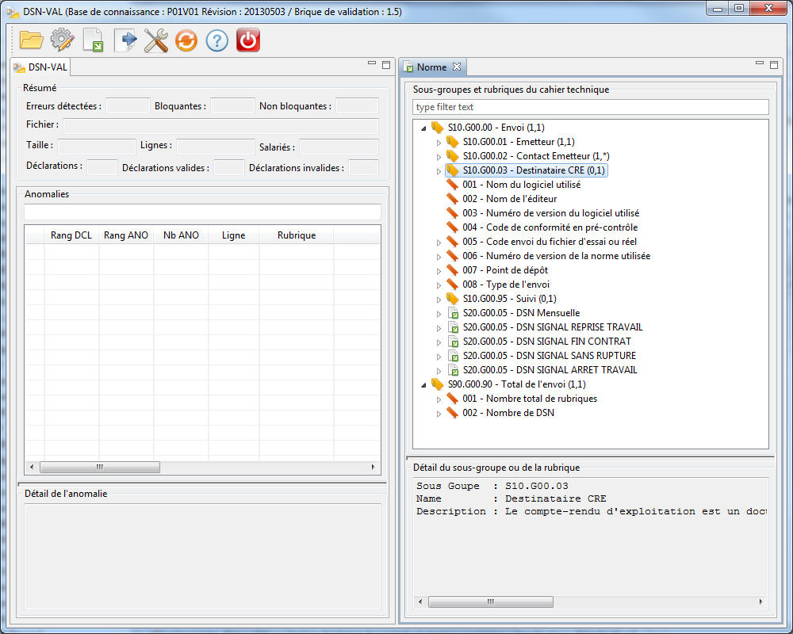
ou bien une en haut et une en bas :
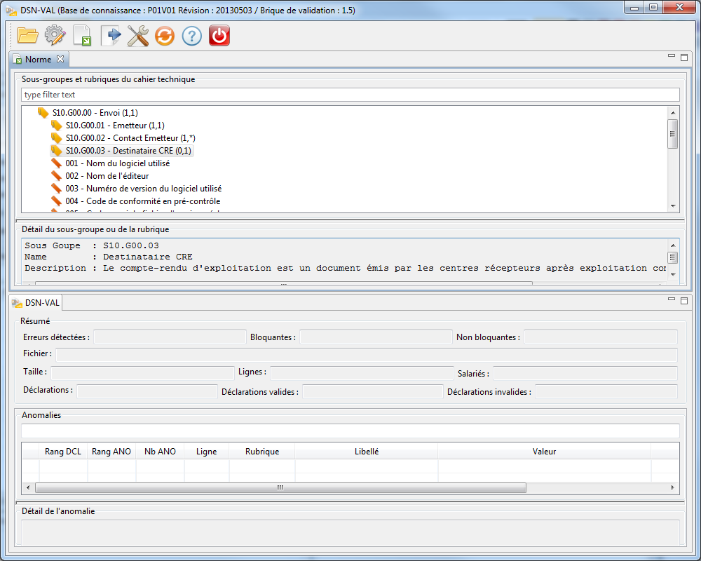
On a également la possibilité de «sortir» une vue de la fenêtre principale.
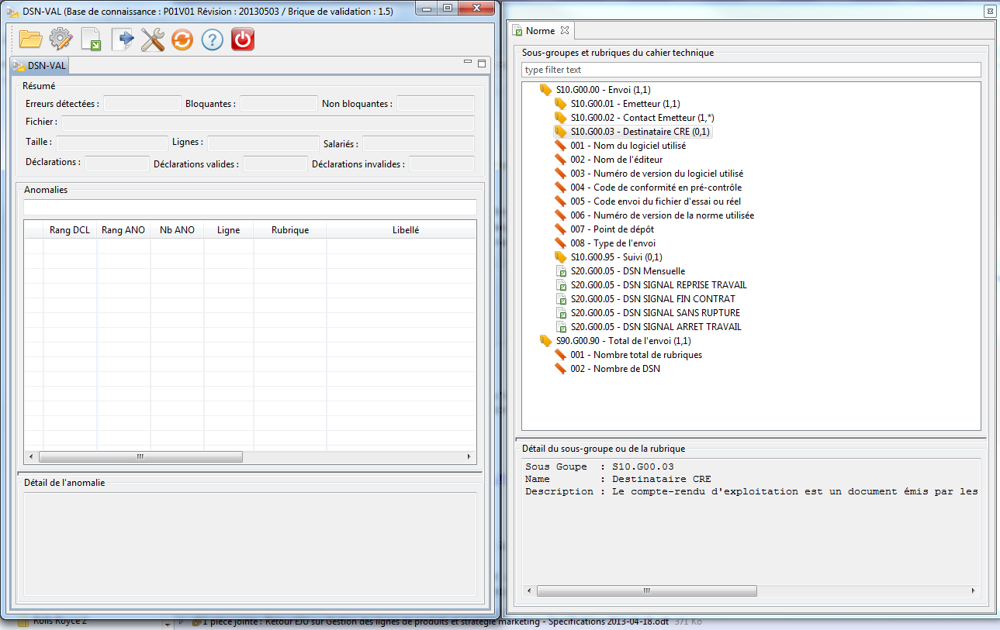
Pour faire ceci, il suffit de sélectionner une vue et de la glisser/déposer à l’endroit souhaité. Une forme rectangulaire de pré-affichage se dessine alors aux endroits dans lesquels la vue peut se déplacer. Par exemple, sur la figure ci-dessous, vous retrouverez le pré-affichage lorsque l’on a glissé la vue norme sur la partie droite.
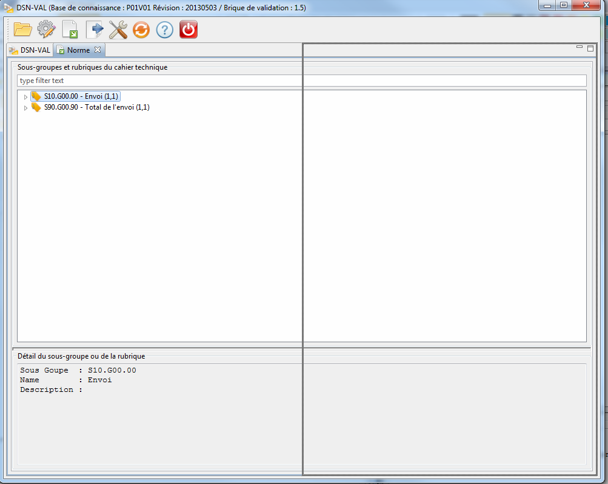
Bien sûr, chaque vue peut retrouver sa position initale en effectuant le processus inverse.
Il existe aussi la possibilité de minimiser et maximiser les vues avec les icônes
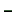 et
 situés en haut à droite de la vue principale.
situés en haut à droite de la vue principale.
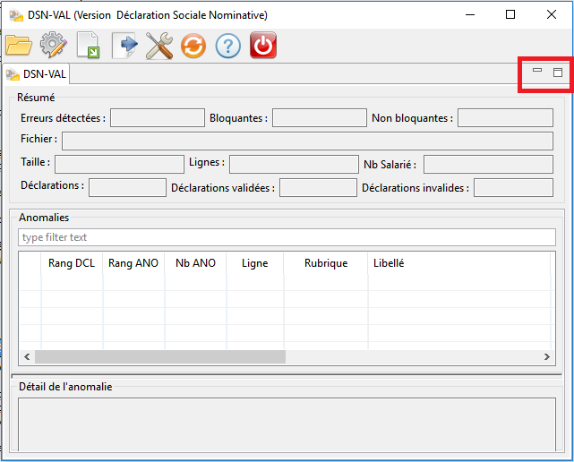
La fenêtre principale se décompose en trois parties :
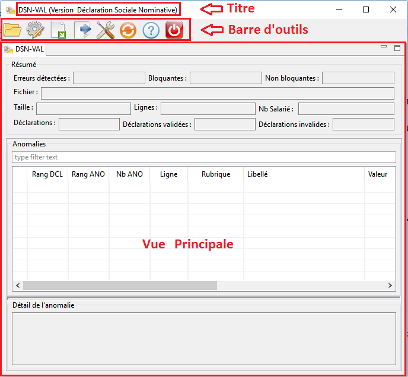
Voici la liste des actions disponibles à partir de la barre d’outils :
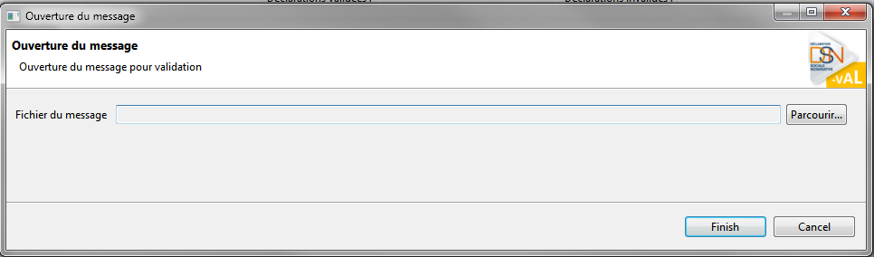
L’outil ne fonctionne qu’avec un zip contenant un seul fichier.
Une fois la ressource sélectionnée, le contrôle est lancé et le résultat est affiché dans la vue principale.
Une barre de progression s’affiche durant toute la durée du contrôle.
La vue principale offre une visualisation du résultat du contrôle lancé sur le message courant. Cette affichage nous permet de naviguer parmi les anomalies et de visualiser les informations synthétiques de chacune d’entre elles.
Cette vue se décompose en trois parties :
L’entête résume les informations retournées par le contrôle du message courant. On retrouve donc :
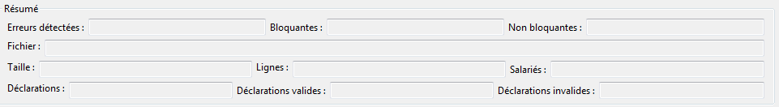
Elle contient la liste des anomalies détectées lors du contrôle du message courant. Dans les colonnes, on retrouve pour chaque anomalie :
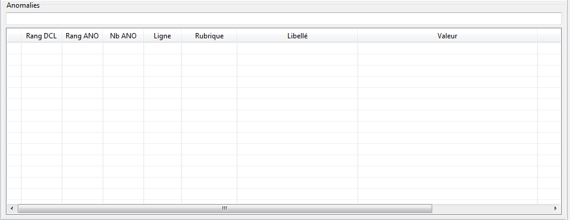
Toutes les colonnes sont retaillables et triables par ordre croissant et décroissant par rapport à leur contenu.
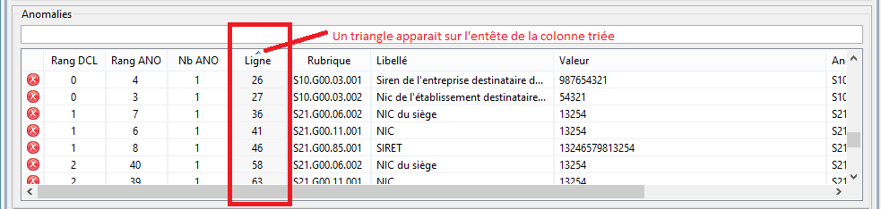
Cette table contient aussi un champ de recherche qui permet de filtrer les anomalies à afficher. On peut par exemple filtrer les anomalies sur le nom de la rubrique ou encore la ligne, etc.
Il est à noter que ce champ de recherche ne supporte pas les caractères joker comme «*».
Voici un exemple en filtrant sur «S21.G00.06» :
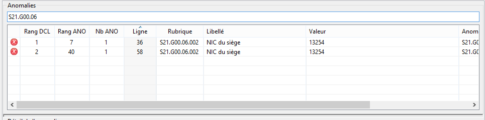
La table des anomalies et la section «Détail de l'anomalie» sont retaillables en hauteur. Pour cela, il suffit de se positionner sur la «ligne» séparant les deux parties (encadrée en rouge dans la figure ci-dessous) et de la glisser/déposer à l’endroit souhaité.
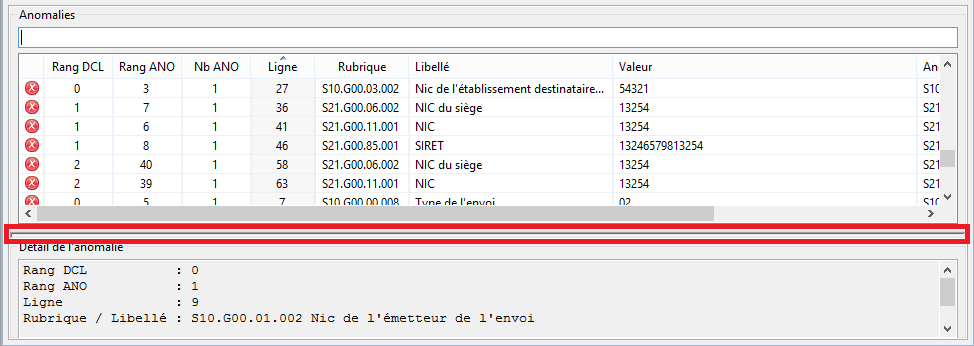
Sur les éléments de la colonne «Rubrique», il est possible de faire afficher une info-bulle récapitulant les informations de la rubrique en laissant la souris dessus quelques instants.
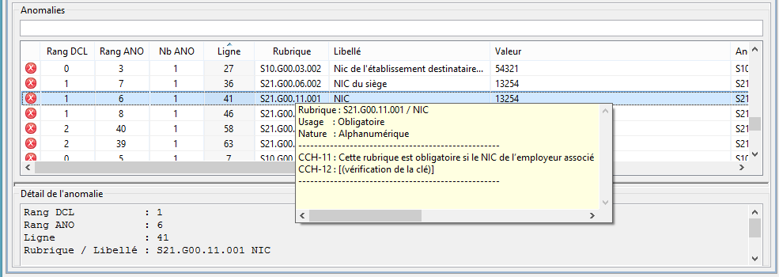
Il est à noter que des infos-bulles sont disponibles sur chaque cellule tronquée pour permettre d’avoir le contenu entier de la cellule.
Cette section récapitule la description et les valeurs de l’anomalie sélectionnée dans la table.
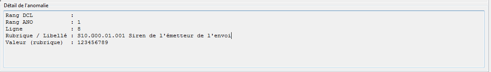
Le contenu de cette section peut être copié/collé, soit avec le menu contextuel du clic droit soit avec les raccourcis clavier habituels.
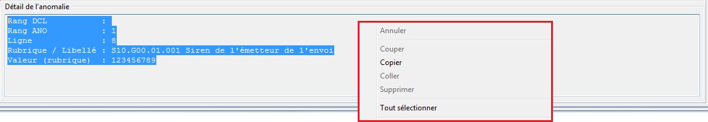
Rappelons que la table des anomalies et la section «Détail de l'anomalie» sont retaillables en hauteur, pour plus de détail l’utilisateur peut se référer au paragraphe précédent.
Depuis une anomalie de la table, le menu contextuel du clic droit permet deux actions :
Dans l’exemple ci-dessous, on retrouve seulement la première action disponible dans le premier encadré car l’anomalie concerne une rubrique du bloc envoi. Dans le second encadré, on retrouve les deux actions car l’anomalie référence un individu. Notons que c’est la vue salarié qui est ouvert car on est positionné sur une norme DSN.
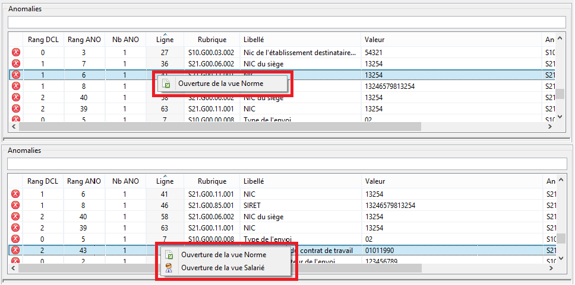
La vue Norme permet de naviguer dans l’ensemble des blocs et rubriques de la norme : elle est représentée sous forme arborescente.
Elle se décompose en deux parties :
Cette partie représente l’arborescence des blocs et rubriques de la norme.
Elle contient aussi un champ de recherche qui permet de filtrer les éléments de la norme à afficher. Les caractères joker comme «*» sont supportés par ce champs de recherche. On peut par exemple de choisir de filtrer les éléments sur leur identifiant ou encore sur un mot de leur label..
Voici un exemple de filtre sur "siège :"
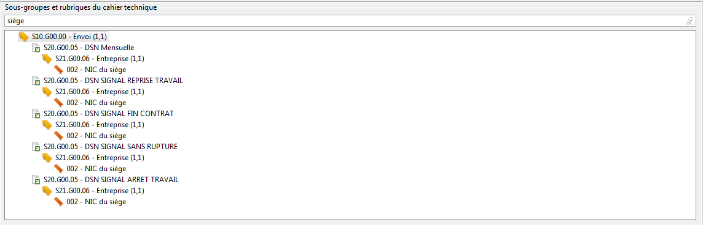
Le champ de recherche bénéficie d’une «gomme» pour effacer tout le contenu de la recherche.
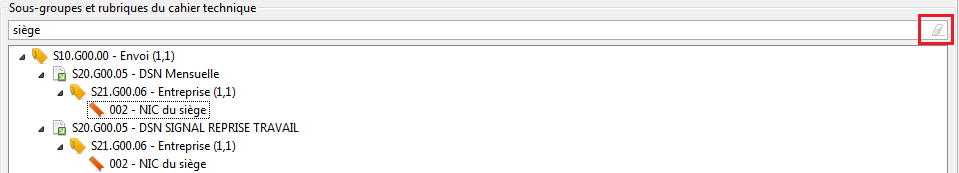
L’arborescence et la section détail sont retaillables en hauteur. Pour cela, il suffit de se positionner sur la «ligne» séparant les deux parties (encadrée en rouge dans la figure ci-dessous) et de la glisser/déposer à l’endroit souhaité.
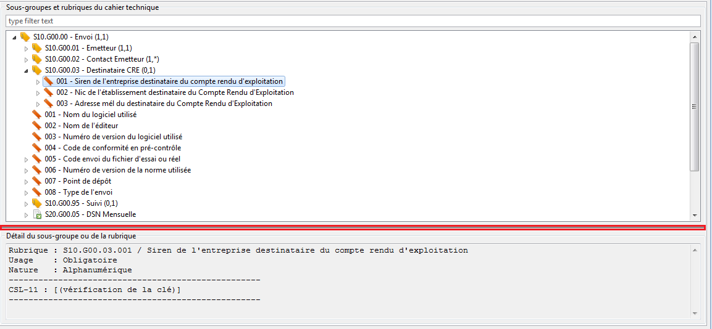
Cette section récapitule la description et les valeurs des rubriques ou blocs sélectionnés dans la table.
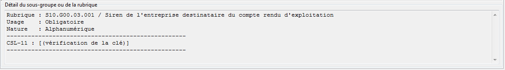
Le contenu de cette section peut être copié/collé, soit avec le menu contextuel du clic droit soit avec les raccourcis clavier habituels.
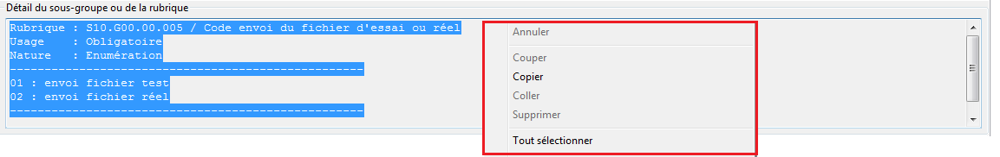
Rappelons que l’arborescence et la section détail sont retaillables en hauteur, pour plus de détail l’utilisateur peut se référer au paragraphe précédent.
La vue individu est personnalisée en fonction de la norme utilisée. Elle permet de visualiser la partie du message contrôlé relative à un élément de la norme qui représente un individu. Dans le cas de la DSN, ce sont les salariés qui représentent les individus.
Cette vue se décompose en trois parties :
L’entête affiche des informations concernant l’individu sélectionné jusqu'à un maximum de quatre informations. Ces informations dépendent de la norme utilisée par l’application.
Dans le cas de la DSN, l’entête s’appelera «Salarié» et les informations affichées pour un individu sont les suivantes :
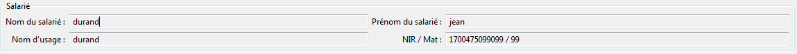
Cette partie représente l’arborescence des blocs et rubriques de la norme avec les valeurs de l’individu sélectionné.
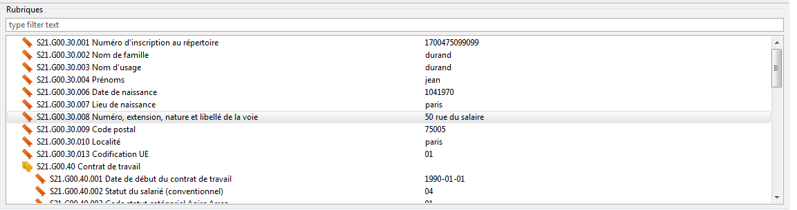
Elle contient aussi un champ de recherche qui permet de filtrer les éléments de la norme à afficher. Les caractères joker comme «*» sont supportés par ce champs de recherche.
Voici un exemple de cette table en filtrant sur «*nom» :
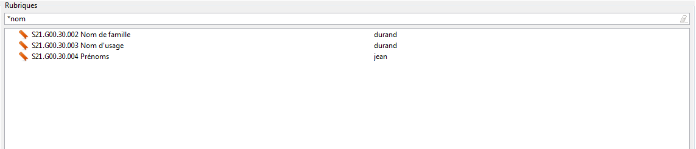
Le champ de recherche bénéficie d’une «gomme» pour effacer tout le contenu de la recherche.
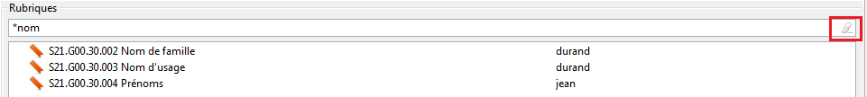
La table la section «Détails» sont retaillables en hauteur. Pour cela, il suffit de se positionner sur la «ligne» séparant les deux parties (encadrée en rouge dans la figure ci-dessous) et de la glisser/déposer à l’endroit souhaité.
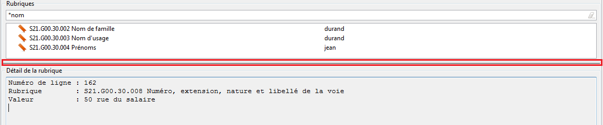
Cette section récapitule la description et les valeurs des rubriques ou blocs sélectionnés dans la table.
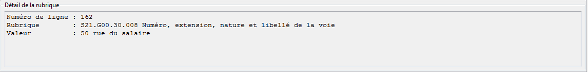
Le contenu de cette section peut être copié/collé, soit avec le menu contextuel du clic droit soit avec les raccourcis clavier habituels

Rappelons que l’arborescence et la section détail sont retaillables en hauteur, pour plus de détail l’utilisateur peut se référer au paragraphe précédent.
C’est la vue principale qui pilote la synchronisation entre les différentes vues. Lorsqu’une anomalie est sélectionnée dans la table de la vue principale :
- si la vue norme est ouverte : la rubrique correspondant à l’anomalie est sélectionnée dans cette vue,
- si la vue individu est ouverte et que l’anomalie est liée à un individu : la rubrique correspondant à l’anomalie est sélectionnée dans cette vue.
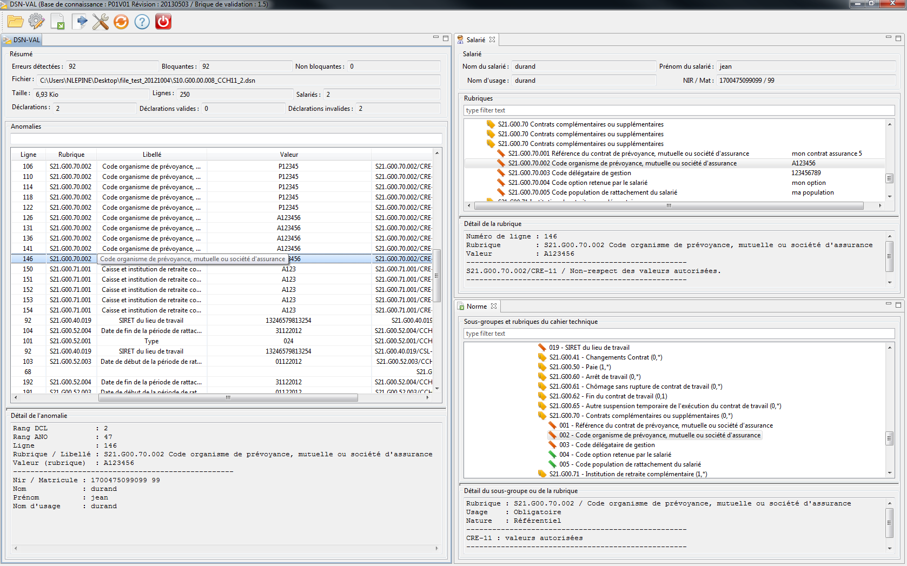
A partir de la vue individu, la sélection d’une rubrique associée à une anomalie provoque :
- la sélection de l’anomalie dans la table de la vue principale,
- si la vue norme est ouverte : la rubrique correspondant à l’anomalie est sélectionnée dans cette vue.
Le bilan de validation peut être enregistré sous n’importe quel format proposé par la norme utilisée. Dans le cas de la DSN, les formats proposés sont html et xml. Lorsque l’on clique sur le bouton de la barre d’outils, une nouvelle fenêtre apparaît et permet de choisir :
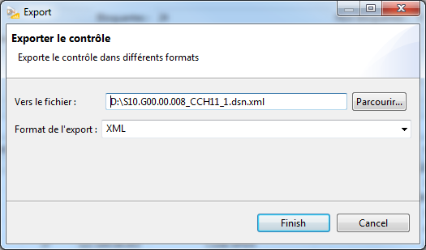
Par défaut, l’enregistrement se fait à côté du message d’entrée. Le nom de l’export est le même que le message d’entrée et le format par défaut est le xml.
Pour changer le répertoire d’enregistrement, il suffit de cliquer sur le bouton «Parcourir» et la fenêtre de sélection de fichier apparaît :
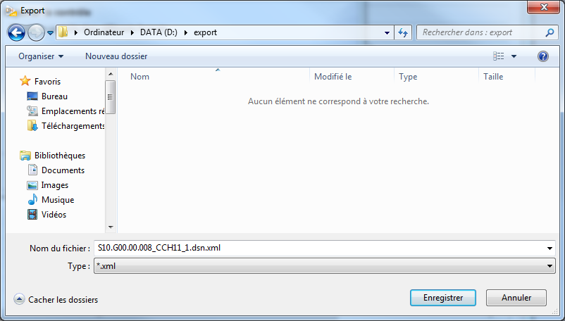
Lors du changement de format avec la boite de choix, l’extension du fichier change automatiquement. Par exemple, si par défaut le fichier est «d:/monFichier.dsn.xml», si l’on change le format d’enregistrement en «html», le nom du fichier se transforme en "d:/monFichier.dsn.html.
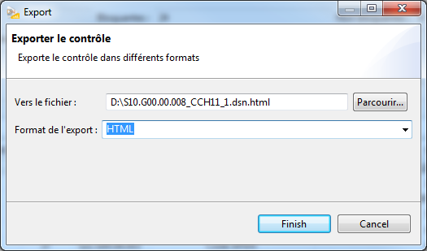
Voici un exemple de génération html que la DSN propose. Il possède un entête récapitulant les informations générales du contrôle puis :
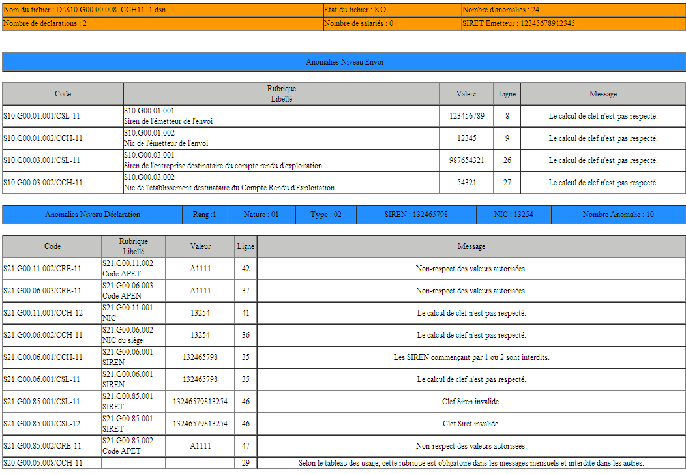
Et un exemple de génération xml, ce format reflète la structure du bilan de contrôle renvoyé par la brique de validation.
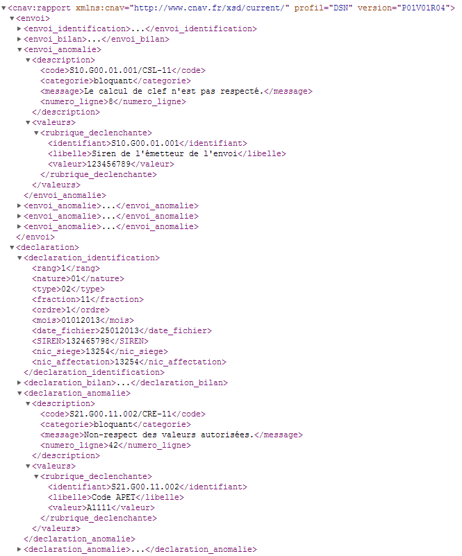
Les préférences sont accessibles depuis la barre d’outils
 et permettent de modifier le nombre maximal d’anomalies que le bilan peut prendre en compte, l’activation de la mutualisation des anomalies, l’activation de la mise à jour de la norme au démarrage et le réglage d’accès au réseau à travers un proxy.
et permettent de modifier le nombre maximal d’anomalies que le bilan peut prendre en compte, l’activation de la mutualisation des anomalies, l’activation de la mise à jour de la norme au démarrage et le réglage d’accès au réseau à travers un proxy.
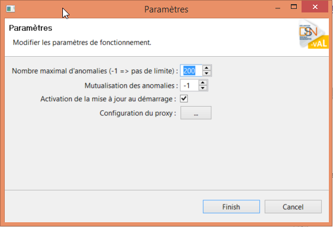
Par défaut, le nombre maximal d’anomalies est à 200. Il est modifiable soit textuellement, soit à l’aide des flèches «haut» et «bas».
Si ce paramètre est valorisé à -1 alors aucune limite ne sera appliquée sur le nombre d’anomalies réstituées lors de la validation.
Par défaut, la mutualisation est désactivée (valeur à -1). La configuration de ce paramètre avec une valeur différente de -1 provoque l’activation de la mutualisation sur les validations futures.
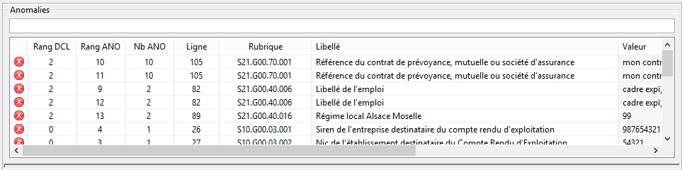
Par défaut, la mise à jour de la norme au démarrage est désactivée.
Pour la confguration du proxy, le bouton «...» donne accès à la fenêtre qui permet sa configuration :
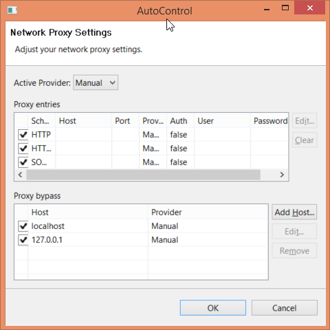
Le comportement de la validation avec l’autoContrôle peut être paramétré via le fichier «Autocontrol-Validateur.ini». Pour chaque paramètre que l’on veut spécifier, il faut ajouter sa ligne à la fin du fichier «ini». La liste des paramètres est la suivante :
| Nom du paramètre | Valeur par défaut | Valeurs autorisées | Description |
|---|---|---|---|
| -Dstop.on.syntactic.error | false | «true», "false" | Si la propriété est renseignée à la valeur « true » alors la validation est interrompue après la validation syntaxique en cas d’anomalies syntaxiques. |
| -Dstop.on.conversion.error | false | «true», "false" | Si la propriété est renseignée à la valeur « true » alors la validation est interrompue après la conversion en cas d’anomalies lors de la conversion. |
| -Dfr.cnav.norme.val.anomaliesInhibiting | true | «true», "false" | Lorsque cette propriété est à « true », les anomalies sémantiques secondaires générées à cause d’une autre anomalie primaire sont filtrées du rapport de validation |
La vérification des mises à jour de la norme utilisée se fait grâce au bouton
de la barre d’outils.
Si aucune mise à jour n’est disponible, une fenêtre informe que l’outil est à jour.
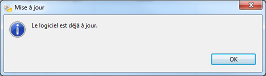
Si une mise à jour est disponible, une fenêtre apparaît et propose à l’utilisateur d’installer ou non cette mise à jour.
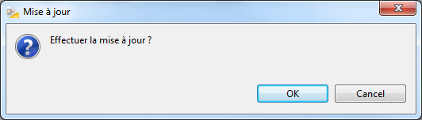
Si oui, la mise à jour est téléchargée. Une fois le processus fini, un message informe l’utilisateur que l’outil va redémarrer pour prendre en compte les changements.

Si le site de mises à jour a besoin d'être modifié, cela est possible en modifiant le fichier «Autocontrol-Validateur.ini» et en remplaçant le paramètre «fr.cnav.autocontrole.updatesite.loc» par sa nouvelle valeur.
Par exemple, -Dfr.cnav.autocontrole.updatesite.loc=http://dsnval.cnav.update .